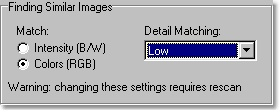

|
|
| ABC-View In-depth Articles |
By Nils Haeck
Introduction
Anyone that downloads images from the internet, or that works a lot with
digital photos, will know that after a while there are probably a lot
of different versions of the same image around.
As long as these images exact duplicates, they can be found very quickly using a check on file length, and if identical, followed by a check of the contents of the files. This is what ABC-View does when searching duplicate files.
It gets more complicated if the images are not exact duplicates. Sometimes, images get resized or perhaps saved with a different amount of compression. Some images even get altered slightly, get frames around them or text or logos added to them.
For automated software it gets suddenly much more difficult to find these similar images. The files have to be compared by actually comparing the pixels in the images.
How ABC-View Manager (ABCVM) does it
In order to be able to compare one image to another, ABCVM first creates
a property containing the image characteristics, called image
metrics. The image metrics are created for each image in the collection
that needs to be checked. This process is called indexing.
The image metrics are constructed so that:
- Similar but resized images can be found
- The difference between two images can be expressed in %.
- The user can define the amount of detail that should be present in the comparison
- The user can opt to just compare intensity, or compare each of the color channels red, green and blue

Options -> General -> Finding Similar Images
The image metrics are kept in the database, and then, ABCVM uses a special process to find images that are similar. The collection may be sorted on similarity, or the collection is filtered so that only similar images are shown in color bands.
Settings for detail matching:
| Level of detail | Database storage* | Application |
| Low | ~70 bytes | Generally applicable mode for finding similar images, up to 0.8% |
| Medium | ~250 bytes | Slightly better results and less false positives up to 2.5% tolerance. Good mode for sorting on similarity. |
| High | ~500 bytes | Better results in all tolerances, excellent for sorting on similarity |
| Super High | ~830 bytes | Generally not necessary. This mode will allow detection of minute detail changes, like in comparison of medical or satellite images** |
* Storage requirement per item,
without compression
** Restrictions apply for usage in medical applications, see LICENSE.TXT
Do the work at the right time
The user can decide when the computer is going to do the "dirty work":
the indexing process can be lengthy for large collections. ABCVM offers
two approaches:
- Start the indexing after adding new files to the collection.
The indexing process is done in the background and once completed, it
allows the user to do a similarity search quickly.
Note that you can save a collection and when you load it again, you don't need to re-index! All image metrics are stored with the database.
Options -> Browser -> Background processes -> [x] Precalculate image metrics for new files
- If you just want to do a quick check of some files, or want to only calculate the image metrics for the files you select, you can do the indexing "on the fly". Whenever a similarity search is started, the files that are not indexed, will be indexed on the spot.
Add the files you want to check
Before you can use ABC-View for similarity checking you will need to add
a list of files to it. Please read this if
you do not yet know how to do this.
Create a list of similar images
Click on the list in which you want to find similar images, for instance
All Items. Rightclick on it and select Add Filter ->
 Find similar images. You will get this dialog:
Find similar images. You will get this dialog:

Tolerance
The tolerance setting allows you to specify what is the maximum allowed
difference between two similar pictures. Higher tolerance will yield more
similar pictures. The smallest tolerance setting (0.3%) will only yield
images that are virtually identical.
Note that a higher tolerance setting will slow down the process of finding
similar images (more images must be compared).
The setting for detail matching will have an influence on the number
of false positives and false negatives that
are found. False positives are images that are not identical but show
up in the list, false negatives are images that are identical, but do
not show up in the list. Next table gives an overview:
| Detail Matching |
False positives & negatives
at tolerance
|
|||||||
| 0.3% | 0.5% | 0.8% | 1.5% | 2.5% | 5.0% | 7.5% | 10.0% | |
| Low | 0% | 0.8% | 0.5% | 1.0% | 2.6% | 13.5% | 32.0% | 43.5% |
| Medium | 0% | 0.5% | 0.1% | 0.5% | 0.5% | 3.7% | 8.5% | 13.8% |
| High | 0% | 0% | 0% | 0% | 0% | 0.1% | 0.4% | 1.6% |
| Super-High |
reference
|
|||||||
based on a comparison with ca. 5000 various images
Similarity search
Click on OK and the similarity search starts immediately. You can
see the progress in the status bar. This is a background process so you
can keep on working and viewing files.
When completely finished, ABC-View will sort the list of similar images so that they are grouped together in recognizable color bands.
Is it possible to delete all inferior images at once?
The list contains groups of similar images. In each group there is
one image that will be favorable to leave, while perhaps all others can
or should be deleted. This is possible, but requires some care.
First of all, it is best to work in Details Mode (F12). As an example,
suppose you want to keep the biggest images (largest dimensions), and
if these are equal, then the image with biggest file size. Here's how
to proceed:
- Click twice on the Size column. First click to sort on size,
second click to reverse the order so that the largest files are coming
first.
- Click twice on the Dimensions column. The first click is to
sort by dimensions, second click to reverse so that largest dimensions
are first.
- Rightclick on any item in the list and select Sort List -> By
Duplicate Group. Note that you now have a list that is first sorted
by duplicate group, then by dimension, and then by size.
- Now click Items -> Special Selection -> Duplicates (w/o original).
You will have selected all 2nd, 3rd and more of each duplicate group.
This means, your top item per group, the one that has largest dimension,
and if equal, largest size, will remain unselected.
- This is the reward: click the "delete" icon and delete or archive the selected items. The top items (your important images) are not selected so also not deleted.
It is crucial to realize that not all images that are in one duplicates group are exactly identical. Especially for the larger tolerance settings, you will find that images may look like the other, but still are definitely different. So please be careful when removing many images automatically with the above method!
Sorting on similarity
With a sort on similarity, you will get a list in which each item is displayed
next to its most similar two neighbors. This process will work best for
lists with a detail matching of at least "Medium".
The image metrics must be precalculated in order for sorting on similarity
to work.
A correct sorting on similarity cannot be done with the quicksort algorithm.
Therefore, for sets smaller than 5,000 images, another method (slower
but more precise) is used to sort the list on similarity.
You can change the default behavior of ABCVM:

Options -> General -> Sorting similar images
Using the fast method for sorting on similarity will do it right in only for exactly similar images. Often, slightly similar images will not end up next to each other.
Download ABC-View Manager Back to article index
| Page last changed 19Jan2004 - © ABC-View 2001-2004 | |||
|